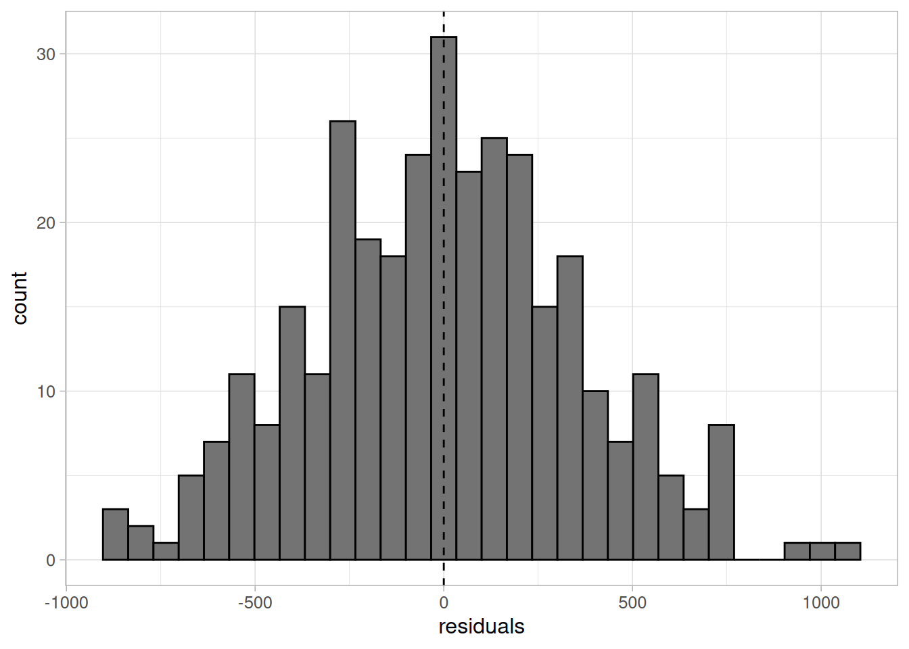

ggplot(data = penguins) +
geom_point(aes(x = flipper_length_mm, y = body_mass_g, colour = species)) +
scale_colour_brewer(palette = "Dark2") +
labs(x = "flipper length (mm)", y = "body mass (g)") +
theme_light(base_size = 12)Appendix B — Exercise solutions
All the exercise solutions here are suggestions and are not exhaustive. Data exploration and model building are often subjective processses which are determined by a person’s prior experience and the context of a project.
B.1 Exercise 1
Using appropriate visualisations, investigate whether there are other variables that may explain differences in body mass. Consider whether any of these variables may be confounding the relationship between body mass and flipper length, and whether they should be included in the model.
Solution
Body mass and flipper length are both likely to differ between penguin species. Changing the colour of points for each species will allow us to visualise these differences:
Species is clearly strongly associated with both body mass and flipper length, although the gradient of these associations appear similar across species.
This scatterplot could be extended to investigate whether these trends differ between sexes. Adding an additional variable to the previous scatterplot may overload it, making the relationships difficult to interpret. Instead, we could facet the graphs, showing a scatterplot per sex on the same graph area, with the same axes:
ggplot(data = na.omit(penguins)) +
geom_point(aes(x = flipper_length_mm, y = body_mass_g, colour = species)) +
scale_colour_brewer(palette = "Dark2") +
labs(x = "flipper length (mm)", y = "body mass (g)") +
facet_wrap(vars(sex), ncol = 2) +
theme_light(base_size = 12)Here, it appears that the male pengions are larger on average than the females. The relationships between body mass, flipper length and species appear equal between sexes.
The data also contains information about penguins’ bill length and depth which may also by a predictor of body mass. These can be plotted against body mass in a scatterplot, replacing flipper length, or could be included into the original scatterplot by using a continuous colour scale.
ggplot(data = penguins) +
geom_point(aes(x = bill_length_mm, y = body_mass_g)) +
labs(x = "bill length (mm)", y = "body mass (g)") +
theme_light(base_size = 12)ggplot(data = penguins) +
geom_point(aes(x = flipper_length_mm, y = body_mass_g,
colour = bill_length_mm)) +
scale_colour_viridis_c(name = "bill length (mm)") +
labs(x = "flipper length (mm)", y = "body mass (g)") +
theme_light(base_size = 12)There appears to be a positive association between bill length and body mass, but it is not as strong as the one between flipper length and body mass.
B.2 Exercise 2
Using everything you have learned up to this point, use linear regression to answer the research question posed earlier:
Is body mass of penguins in the Palmer Archipelago related to their flipper size?
Solution
From our research question, we know that our model must have body mass as the outcome and flipper length as an explanatory variable. Previous exploratory analysis showed that sex and bill length were also associated to body mass. We can add these variables into a linear model and consider whether it improves the model fit. We may also try removing species from the model as this appeared to lead to heteroskedasticity in the residuals:
lm_flipper <- lm(body_mass_g ~ flipper_length_mm, data = penguins)
lm_flipper_sex <- lm(body_mass_g ~ flipper_length_mm + sex,
data = penguins)
lm_flipper_bill <- lm(body_mass_g ~ flipper_length_mm +
bill_length_mm, data = penguins)
lm_full <- lm(body_mass_g ~ flipper_length_mm + sex +
bill_length_mm, data = penguins)- 1
- We will begin with the simplest possible model for comparison, one containing just body mass and flipper length.
- 2
- A model with sex instead of species which was found to be related to body mass.
- 3
- Add bill length to see if this improves the initial model.
- 4
- A model with all potential exploratory variables (besides species).
We can compare these models in various ways, including the adjusted R-squared, information criterions, and prediction errors. Below is a table containing these comparisons for each model.
| model | adjusted R-squared | AIC | RMSE |
|---|---|---|---|
| flipper only | 0.7582837 | 5062.855 | 393.1236 |
| flipper + sex | 0.8046607 | 4862.484 | 354.2762 |
| flipper + bill length | 0.7585415 | 5063.482 | 392.3357 |
| flipper + bill length + sex | 0.8047466 | 4863.327 | 353.6612 |
The model containing flipper length and sex slightly outperformed the full momdel according to the adjusted R-squared and AIC, but had a slightly lower RMSE. As the bill length is not important to our research question and the model is not being used for prediction, we will choose the simplest possible model and remove bill length.
Before we use this model to answer our research question, we must ensure that the model is valid. Remember, the assumptions we need to check are Linearity, Independent covariates, Normally distributed residuals, with Equal variance.
vif(lm_flipper_sex) flipper_length_mm sex
1.069646 1.069646 All VIFs are very low, indicating no issues with multicollinearity.
lm_flipper_sex_resid <- lm_flipper_sex$model %>%
mutate(residuals = residuals(lm_full))
ggplot(data = lm_flipper_sex_resid) +
geom_histogram(aes(x = residuals), colour = "black", fill = "grey45") +
geom_vline(xintercept = 0, linetype = "dashed") +
theme_light(base_size = 12) - 3
- Plot the residuals against each covariate to check the linearity assumption.

ggplot(data = lm_flipper_sex_resid) +
geom_point(aes(x = body_mass_g, y = residuals)) +
geom_hline(yintercept = 0, colour = "darkorange3") +
labs(x = "body mass (g)", y = "residuals") +
theme_light(base_size = 12) ggplot(data = lm_flipper_sex_resid) +
geom_point(aes(x = flipper_length_mm, y = residuals)) +
geom_hline(yintercept = 0, colour = "darkorange3") +
labs(x = "flipper length (mm)", y = "residuals") +
theme_light(base_size = 12) ggplot(data = lm_flipper_sex_resid) +
geom_point(aes(x = sex, y = residuals)) +
geom_hline(yintercept = 0, colour = "darkorange3") +
labs(x = "sex", y = "residuals") +
theme_light(base_size = 12) The residuals are approximately normal, their variance is approximately constant, and there is no evidence to suggest that the linearity assumption would not be valid. Therefore, we can use this model to answer our research question.
summary(lm_flipper_sex)
Call:
lm(formula = body_mass_g ~ flipper_length_mm + sex, data = penguins)
Residuals:
Min 1Q Median 3Q Max
-910.28 -243.89 -2.94 238.85 1067.73
Coefficients:
Estimate Std. Error t value Pr(>|t|)
(Intercept) -5410.300 285.798 -18.931 < 2e-16 ***
flipper_length_mm 46.982 1.441 32.598 < 2e-16 ***
sexmale 347.850 40.342 8.623 2.78e-16 ***
---
Signif. codes: 0 '***' 0.001 '**' 0.01 '*' 0.05 '.' 0.1 ' ' 1
Residual standard error: 355.9 on 330 degrees of freedom
(11 observations deleted due to missingness)
Multiple R-squared: 0.8058, Adjusted R-squared: 0.8047
F-statistic: 684.8 on 2 and 330 DF, p-value: < 2.2e-16confint(lm_flipper_sex) 2.5 % 97.5 %
(Intercept) -5972.51535 -4848.08510
flipper_length_mm 44.14697 49.81738
sexmale 268.49120 427.20930Based on these results, we can infer that there is a significantly positive association between flipper length and body mass of the Palmer penguins. On average, body mass is expected to increase by 46.98g for every 1mm increase in flipper length, We are 95% confident that this increase is between 44.15g and 49.82g in the target population.
B.3 Exercise 3
Using the data, fit an appropriate model to answer the research question:
Is cancer mortality associated with poverty levels in the USA?
Ensure that the mode contains any variables you consider necessary, and check that it is valid before using it to answer the research question.
Solution
The model we require will have cancer mortality (number of deaths with population as an offset) as an outcome and must contain a measure of poverty to answer the research question. Other variables from the data that may be important include the average age of a county, their access to medicare, and possibly income (although this will likely be highly correlated to poverty).
First, we should explore the data and plot these variables to understand their bivariate relationships. Rather than do this manually, we could use the ggpair function from the GGally package:
library(GGally)
cancer_reg_clean <- cancer_reg %>%
mutate(mortality_rate = (number_death / population_2015) * 10^5,
offset_rate = log(population_2015 / 10^5)) %>%
select(mortality_rate, number_death, population_2015, age, income, poverty,
medicare, offset_rate)
cancer_reg_clean %>%
select(-number_death, -population_2015, -offset_rate) %>%
ggpairs()As expected, both income and medicare access are highly correlated to poverty. Although this does not necessarily make them dependent on each other, the interpretation of mode coefficients can be complicated by their inclusion. To remove this issue, we can add age to the original model to see if it improves the fit.
pois_pov <- glm(number_death ~ poverty + offset(offset_rate),
data = cancer_reg_clean, family = poisson)
pois_pov_age <- glm(number_death ~ poverty + age + offset(offset_rate),
data = cancer_reg_clean, family = poisson)The adjusted R-squared measure is only appropriate for linear models. However, we can still use information criterions and prediction errors to compare models:
| model | AIC | RMSE |
|---|---|---|
| poverty only | 7041.657 | 192.3616 |
| poverty + age | 4330.177 | 192.3497 |
Adding age appears to vastly improve the AIC but only slightly improve prediction according to the RMSE. The poisson model containing just poverty showed strong evidence of overdispersion, therefore we must check this model to find whether the addition of age has removed the issue:
dispersiontest(pois_pov_age, trafo = 1)
Overdispersion test
data: pois_pov_age
z = 4.0437, p-value = 2.63e-05
alternative hypothesis: true alpha is greater than 0
sample estimates:
alpha
1.141831 Although the dispersion parameter is lower than the poverty only model, there is still evidence of overdispersion. Therefore, a quasipoisson model may be more appropriate:
quasi_pov_age <- glm(number_death ~ poverty + age + offset(offset_rate),
data = cancer_reg_clean, family = quasipoisson)
summary(quasi_pov_age)
Call:
glm(formula = number_death ~ poverty + age + offset(offset_rate),
family = quasipoisson, data = cancer_reg_clean)
Coefficients:
Estimate Std. Error t value Pr(>|t|)
(Intercept) 3.134120 0.058920 53.19 <2e-16 ***
poverty 0.018326 0.001076 17.02 <2e-16 ***
age 0.047598 0.001326 35.89 <2e-16 ***
---
Signif. codes: 0 '***' 0.001 '**' 0.01 '*' 0.05 '.' 0.1 ' ' 1
(Dispersion parameter for quasipoisson family taken to be 2.175137)
Null deviance: 4101.4 on 526 degrees of freedom
Residual deviance: 1174.7 on 524 degrees of freedom
AIC: NA
Number of Fisher Scoring iterations: 4The summary of quasipoisson models contains an estimate of the dispersion parameter. Quasipoisson and Poisson models are equivalent when the dispersion parameter is 1. As the parameter was estimated above that, this is a clear indication the poisson model was not appropriate for this data.